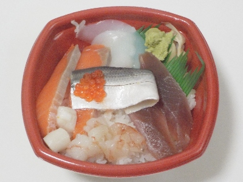
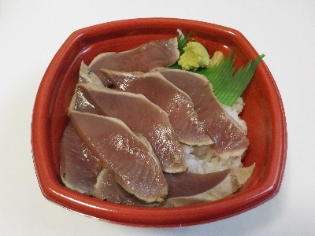
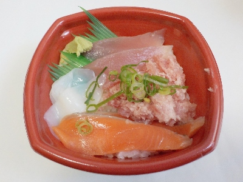

出雲丼丸の海鮮丼。
2024/09/21

いろいろ入った海鮮丼です。
混んでる回転寿司もいいですが、どんぶり買って家で食べるのはとってもらくちんで美味しいです。
島根県出雲市塩冶町1454-1
2024/09/21

いろいろ入った海鮮丼です。
混んでる回転寿司もいいですが、どんぶり買って家で食べるのはとってもらくちんで美味しいです。
2024/04/13

今日は出雲丼丸感謝キャンペーンでかつおたたき丼、かつおネギトロ丼、さばかつお丼、いかかつお丼が390円でした。
今回はカツオタタキ丼を選んで買いました。
来月は5/11が感謝キャンペーンで、ビントロ丼、ビントロネギトロ丼、あなごビントロ丼、いかビントロ丼が390円です。
2024/03/31

初めてだったのでお店の名前がついた丼丸丼を注文しました。
税込540円でこのボリュームなら文句ないと思いました。
添付の醤油とワサビを全部使って食べたんですが、私的には丁度いい塩分と辛さになって美味しかったです。